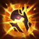
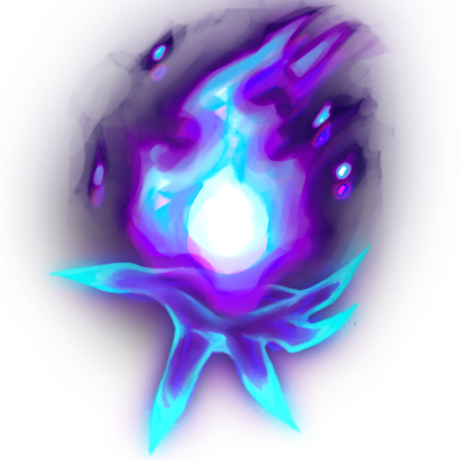
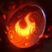
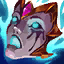
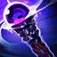

Brand Jungle
Built for send help#2366 · Patch 26.13 · July 2026 · the Burning Vengeance, from the river up
How to read the labels: VERIFIED multi-source, adversarially fact-checked · SINGLE SOURCE one reputable source · REASONING derived from verified numbers · YOUR DATA your own match history (op.gg, position fields, July 2026). Stats are lolalytics patch 26.13, Emerald+ unless marked. Requested by Campbell (soup minion#NA1). This is the long one on purpose — it assumes nothing about jungle and explains everything once. The companion PDF covers Brand's other roles.
VERIFIED Straight truth first, because a guide that hides it would be lying to you: Brand jungle is an off-meta pick on 26.13. Only ~1 in 20 Brand games at Emerald+ (and ~1 in 30 at Silver) are jungle — most Brands are supports — and his jungle win rate sits below 49% at every tier, bottom-10 of ~80 junglers. Riot also nerfed his early game this exact patch (§3). None of that makes him unplayable — it means he's a "because it's fun and I'm good at Brand" pick, not a free-ladder-points pick.
| Cut (26.13) | Win rate | Pick rate | Games (n) | Rank among junglers |
|---|---|---|---|---|
| Emerald+ | 48.62% | 0.31% | 7,696 | 75 of 77 |
| Gold | 48.65% | 0.36% | 8,242 | 77 of 80 |
| Silver | 47.59% | 0.30% | 5,352 | 74 of 81 |
| All ranks | 47.95% | 0.32% | 31,954 | 77 of 80 |
YOUR DATA You, specifically (op.gg match payloads, July 6): Bronze 3 in both queues, and Brand is already your best champion — 8 games, 6–2 this season, and you've played him in all five positions, including a Brand-jungle win today (3/7/21 in a 41-minute flex game). Two things jump out of that jungle game. First, the good: 21 assists means you already play Brand's real teamfight job. Second, the fixable: 164 jungle CS in 41.6 minutes is 3.9 camps-CS per minute — very slow clears, and clears are most of a jungler's income. §7 is built around fixing exactly that. One more habit to steal from your own support games: you bought 6 control wards there and zero in every other role. §2e.
YOUR DATA Your squad context: soup minion (Naafiri) was in all 15 of your recent flex games and Jasio (Nunu, one-tricked) jungled in 10 of them — so Brand jungle is your slot for solo queue and the nights Jasio isn't on. Fair warning for those flex lobbies: premade MMR pulls them to Silver–Plat 4, well above your solo bracket.
VERIFIED One more honest note: your best statistical Brand roles are support (his home role, 51.9% at Emerald+, A-tier at Gold) and bot APC (his highest WR anywhere, ~53.8%). Those live in the companion PDF — this one is jungle because that's what you asked for.
REASONING What Brand jungle actually is: an AoE burn machine whose passive does percent-max-HP damage — camps and dragons don't get smaller to him as the game goes on, and his multi-camp AoE (W + spreading E) eats grouped camps and the Void Grub trio. What he is not: mobile. He has no dash, no escape, and every good early duelist in the game knows it (§10 and §11 deal with that). Game plan in one line: clear fast, gank with the stun, own every grouped objective, and teamfight like the support Brand you already are — from 900 range, not the front line.
You've jungled a handful of games (Graves ×2, Brand today). This section is the stuff the game never tells you, verified against the wiki's current pages — several popular guide sites still show pre-2026 numbers.
VERIFIED Smite deals 600 true damage to a monster. You get your first charge at 0:48, it recharges every 90s, holds max 2 charges, and has a 15s cooldown between casts. Feeding your jungle pet treats (earned by killing large monsters) upgrades it: at 15 treats → Unleashed Smite (1,000), at 35 treats → Primal Smite (1,400, hits nearby monsters too, consumes the pet item and frees the slot, and unlocks your pet's bonus passive). Both upgraded tiers also let you Smite champions and their pets for 40 true damage + a 20% slow for 2s. Two rules that decide games: never start Dragon/Baron/Grubs without a Smite charge up, and at any contested objective, save Smite for the execute — the enemy jungler's Smite vs yours is a duel over the last ~1,200 HP.
VERIFIED Junglers start with a 450g pet that makes camps damage you less and die faster — buying one (plus a Health Potion) IS the jungle start; it also gates treat progress. Brand's pick: Scorchclaw Pup (71% of Brand jungle games). SINGLE SOURCE Fully stacked (large monster kills fill it), your next hit on a champion burns them for 5% max-HP true damage and slows 30% — a free gank-stick that stacks with everything in §8. VERIFIED Curiosity for later: Mosstomper (the shield pet) posts 53.3% WR at Emerald+ on n=289 — a real "immobile mage needs padding" signal, but the sample is thin; Scorchclaw is the default.
| Camp | First spawn | Respawn (from its death) |
|---|---|---|
| Red / Blue buff | 0:55 | 5:00 |
| Wolves, Raptors | 0:55 | 2:15 |
| Gromp, Krugs | 1:07 | 2:15 |
| Scuttle crab (river) | 2:55 | 2:30 |
VERIFIED Patch 26.01 moved all of these up (~35s earlier than every pre-2026 guide). The respawn clock runs from the moment the camp dies — so the rhythm of jungling is: clear a side, spend ~30–60s ganking/warding/backing, and be back as camps repop. Standing in your jungle waiting for a camp is wasted time; walking past an up camp without killing it is wasted gold.
| Objective | Timing | Why you care |
|---|---|---|
| Void Grubs (trio, top river) | 8:00 → despawn 14:45 · one spawn per game | Each grub eaten = your whole team's attacks burn structures. Three camps standing in a cluster — Brand's best objective in the game (§9). |
| Dragon (bot river) | 5:00, respawns 5:00 after | Permanent team stat buffs; 4th drake = Soul. The bot-side mirror of grubs. |
| Rift Herald (top river) | 15:00 → despawns 19:45 | Take it, drop the Eye, ram a tower. Once per game. |
| Baron | 20:00 | The game-ender. Never start it without Smite up; assume the enemy jungler is 3 seconds away. |
| Ability | What it actually does |
|---|---|
| P · Blaze | VERIFIED Every ability hit sets the target Ablaze: 2% of their max HP burned over 4s per stack, max 3 stacks (ticks every 0.25s). At 3 stacks on a champion or large monster, it detonates after 2s: 6–12% (by level) +2% per 100 AP of max HP to everything in a 475 radius. Kills with abilities (or of any burning target) refund 20–40 mana — your sustain. This passive is why Brand never falls off vs dragons and tanks: percent-HP doesn't care how big they are. |
| Q · Sear | VERIFIED Skillshot, range 1100 (edge 1040): 70–190 (+65% AP). The headline: if the target is already burning, Q stuns for 1.75s. Not burning = no stun. Every gank you ever land is "apply fire first, then Q." CD 8→6s, 70 mana. |
| W · Pillar of Flame | VERIFIED 900-range AoE circle (260 radius): 75–255 (+70% AP), and +25% vs targets already Ablaze. It lands 0.627s after cast (0.891s including cast time) — lead moving targets, or stun them first. Your max-first skill and your whole camp clear. |
 E · Conflagration | VERIFIED Point-and-click (never misses), range 675: 55–155 (+60% AP), and it spreads to everything within 300 units — 600 units if the target is already Ablaze. Spread targets are locked at cast; the fire homes in even if they run. This is the "set the whole camp on fire" button. 26.13 raised its mana to 90 flat — respect it early (§7). CD 13→9s. |
| R · Pyroclasm | VERIFIED A fireball that hits for 100/175/250 (+30% AP) and then bounces up to 4 times between nearby enemies (and Brand himself), 600 search radius, preferring burning champions → other champions → anything else. Against one isolated enemy it hits them up to 3 times (300/525/750 +90% AP total). Burning targets hit by it are also slowed 30/45/60%. CD 100/90/80, range 750. Full usage rules in §4 — this button has real discipline attached. |
VERIFIED Vs monsters, Blaze ticks do 270% damage, capped per tick at 12.5/25/37.5 (1/2/3 stacks) vs regular camps and 20/40/60 vs epics — that's up to 150 damage per second vs camps and 240/s vs Dragon and Baron, before any of your actual spells. The 3-stack detonation is capped at 270–525 (by level) vs monsters.
VERIFIED The 26.13 nerf: the detonation floor dropped from 8% to 6% max HP. The monster cap doesn't protect your clear from this — at 6%, the cap only kicks in above 4,500 max HP, and camps spawn far below that (Gromp 2,050, Blue buff 2,300; Blue only reaches its 6,210 max late game). So early detonations are uncapped percent damage, and this patch made them smaller. Translation: your first clear got slightly slower this patch, so route hygiene (§7) matters more, not less. Same patch also gave back mana regen (9→11) and made E cost 90 flat.
| Combo | Buttons | When & why |
|---|---|---|
| Camp clear loop | E → W → Q → W on CD | E tags the whole camp (spread), so your W hits everything for +25%, and Q on the big monster stuns... nothing (monsters don't get stunned) but stacks toward the detonation, which is the real clear speedup. Details per camp in §7. |
| The gank string | E → Q(stun) → W → autos | E is point-and-click — guaranteed fire — so the follow-up Q is a 1.75s stun on a much easier target. W lands inside the stun window. This is 90% of your ganks. |
| Long-range opener | W → Q → E | From fog, 900 range, before they know you're there. Harder (W must hit a moving target) but starts the fight from further than most junglers can answer. If W misses, just leave. |
| Full burst (post-6) | E → Q → W → R | Three stacks + detonation + R raining down, with R's bounces preferring the burning target. Kills most squishies from level 11 on. |
| Teamfight | Q pick → E spread → W clump → R | Spread fire wide, then R the clump: bounces prefer burning champions, so pre-spreading turns R into a 5-hit detonation chain. |
VERIFIED R discipline — read twice: (1) It's a 2+ enemies button in fights; near minions or camps the bounces bleed into them (anything is a valid bounce target after champions — including Brand himself). (2) If the first target spell-shields (Sivir, Morgana Black Shield, Banshee's), the entire spell fizzles — zero bounces. A shield on a later bounce only eats that one hit and the chain continues. So never open R into a visible spell shield; strip it with E first. (3) Bounce count: 4, confirmed on the in-client tooltip — the shop-data text saying 5 is stale.
YOUR DATA Good news: you already run the correct page. All 8 of your Brand games this season used Deathfire Touch with Precision secondary — that's the statistically best setup at every tier, and most Bronze players are NOT on the right page. Below is the exact best version of what you're already doing.
| Piece | Choice | Notes |
|---|---|---|
| Keystone |  Deathfire Touch (Sorcery) | VERIFIED 73% pick, and it beats Dark Harvest by 1.1–3.3pp at every tier. Your spell damage sticks a burn (magic damage, scaling with AP) — on a champion whose whole kit is already burns. Re-added to the game in 26.09. |
| Sorcery row | Manaflow Band · Transcendence · Scorch | VERIFIED The standard page at all tiers (48.8–49.8% on n≈5.5k per tier). Directional upgrades if you want to experiment: Gathering Storm 50.6% and Waterwalking 50.2% (a jungler lives in the river) both out-win Scorch's 47.6%. |
| Secondary | Precision: Cut Down + Presence of Mind | VERIFIED Cut Down = "8% more damage to champions above 60% max health" — your burns start every fight vs full-HP targets, so it's basically always on at the moment you engage. |
| Shards | Adaptive / Ability Haste / Health | VERIFIED One real upgrade over the most-picked page: the Haste flex shard wins by ~2.5pp over double-Adaptive (50.1% vs 47.6%, n=2,222). More casts = more Blaze stacks. |
| Summoners & start | Flash + Smite ·  Scorchclaw + Health Potion | VERIFIED Flash+Smite is 95.8% of games. No Flash = no escape on a champion with no dash; non-negotiable. |
VERIFIED Deathfire Touch fine print (it matters for Brand): the burn lasts 4s only from single-target spell damage — for Brand, just Q. Area damage (your W, E and R) applies a 2s burn, and damage-over-time ticks (Blaze itself) refresh only a 1s burn. It's still his best keystone — it just means Q into a fleeing target is your longest-bleeding poke, and DFT is really a "many refreshes" rune on Brand, not a "one big burn" rune.
| Order | Item | Why |
|---|---|---|
| 1st |  Liandry's Torment 3000g | VERIFIED 60 AP, 300 HP; your ability damage adds a burn of 1% of max HP per 0.5s for 3s, plus up to +6% damage amp the longer you fight. Percent-HP burn on the percent-HP burn champion. Most picked first at every tier and the safest: at Silver, Liandry's-first wins 49.8% vs Blackfire-first 45.2%. |
| 2nd |  Sorcerer's Shoes 1100g Sorcerer's Shoes 1100g | VERIFIED 76% pick; magic pen is his best cheap damage. Note for 2026: the free tier-3 upgrade (Spellslinger's Shoes) is a midlane role-quest reward — junglers don't get it; your role progression is the pet-treats track (§2a). Plan around plain Sorcs. |
| 3rd |  Rylai's Crystal Scepter 2600g Rylai's Crystal Scepter 2600g | VERIFIED 65 AP, 400 HP, and ability damage slows 30% for 1s — every Blaze tick re-applies it, so anything you set on fire is slowed for the whole burn +1s. On a dash-less ganker this is the item that makes ganks stick. Liandry's→Rylai's is the winning pair at every tier (Silver 52.0%, Gold 51.8%, E+ 50.5%). |
VERIFIED The full core (Liandry's → Sorcs → Rylai's) is the most-played line at 51.6% WR (n=1,493) — above Brand jungle's 48.6% average. Fine print on the slow: Rylai's is triggered by ability damage — Blaze counts, but Liandry's and Blackfire's own item burns don't (they're tagged as non-spell damage), so the perma-slow comes from keeping YOUR fire refreshed, not from items ticking.
YOUR DATA About your Blackfire Torch habit — you built it in 7 of 8 Brand games. It's not wrong: Blackfire is a real Brand item (each burning champion or large monster = +4% AP for you, lovely in jungle), it's fully legal alongside Liandry's, and at Emerald+ the Blackfire→Liandry's line actually posts the best numbers. But at Silver/Bronze it measurably underperforms (45.2% first-item vs Liandry's 49.8%) — most likely because it's a tempo item that rewards perfect early aggression, while Liandry's+Rylai's forgives mistakes. Recommendation: Liandry's first every game for now; if you want your torch back, slot Blackfire third instead of Rylai's only when you're already fed and the enemy has no divers.
REASONING (component prices DDragon-verified) You'll rarely back with exactly 3000g. The ladder toward Liandry's:
| Item | The job |
|---|---|
| Zhonya's Hourglass 3250g | VERIFIED The best 3rd/4th item in the data by a mile (54.3% at slot 3, 61.7% at slot 4). You're an immobile mage who wants to stand in mid-fight range: the 2.5s stasis IS your missing escape. Buy it 3rd every time they have assassins or dive (Zed, Kha'Zix, Vi, Nocturne...). Your burns keep ticking while you're golden. |
 Shadowflame 3200g Shadowflame 3200g | VERIFIED 110 AP, 15 magic pen, and your magic damage crits for 120% vs enemies below 40% HP — including every Blaze and Liandry's tick. The finisher item: burns start executing people. Great 3rd/4th vs squishy comps. |
| Bloodletter's Curse 2900g | VERIFIED (group) Stacking magic-resist shred as you damage them — your DoTs stack it hands-free, and it shreds for your whole AP team. Vs tanky-MR comps. Shop rule: Limited to 1 Blight item — it shares a group with Void Staff (and Cryptbloom); you can never own two of those. |
 Void Staff 3000g | VERIFIED 40% magic pen; the raw math answer once two enemies stack MR. Same Blight group as above — pick one shred item. |
 Morellonomicon 2850g Morellonomicon 2850g | VERIFIED Anti-heal: your magic damage applies 40% Grievous Wounds (that's the max — the old 60% tier doesn't exist). Buy vs Soraka/Mundo/lifesteal stackers; one Grievous buyer per team is enough, and your DoTs keep it applied constantly, so that buyer should be you. |
| Rabadon's Deathcap 3500g | VERIFIED +30% total AP; the "I'm fed, end the game" 5th item. |
| Malignance — don't | VERIFIED Looks Brand-flavored (ult haste + R burn zone) but posts ~39% WR as a first item at Gold/Silver. A trap on jungle Brand; his R is already low-CD. |
| If the enemy team has... | You prioritize |
|---|---|
| 2+ tanks / 3k-HP frontline | REASONING Nothing changes — this is Brand's favorite lobby. Blaze + Liandry's are percent-HP; add Void Staff or Bloodletter's (never both) 4th. Keep Cut Down. |
| Assassins / hard dive (Zed, Kha'Zix, Vi, Noc) | REASONING Zhonya's third, before Rylai's if it's bad. Consider Mercs/Steelcaps over Sorcs if they also have heavy CC. Play behind your frontline at W range. |
| All-squishy poke comp | REASONING Shadowflame climbs to 3rd; consider swapping Cut Down → Coup de Grace (the below-40% twin) since nobody stays above 60% long. |
| Big healing (Soraka, Aatrox, Vlad) | REASONING Morello 4th — you're the team's best Grievous applicator. |
| A spell-shield user (Sivir, Morgana, Banshee's buyer) | REASONING Doesn't change the build — changes the R rule: E strips the shield first, or R a different primary target (§4). |
VERIFIED Skill max: W > Q > E, R at 6/11/16 (68% pick, and the winning order at every tier). Level 1: take W — it's what low-elo Brands overwhelmingly do (69–74% at Gold/Silver) and it fits the AoE-clear logic below. Level 2 take Q, level 3 take E. REASONING (Emerald+ actually splits W/Q at level 1 close to 50/50 — if you ever start buff-side and want max single-target damage on Red, Q-first works; W-first is the simpler default and this guide assumes it.)
REASONING Why E→W on multi-camps but W-first on buffs: E's spread needs a target and doubles (300→600) off a burning one, and W hits +25% on anything already burning — so on groups, tag with E, then W the burning pile. On single targets there's nothing to spread to; just open W. Either way, cycle everything on cooldown — 3 Blaze stacks on the big monster = a detonation, which is a huge chunk of the camp's HP bar.
VERIFIED Pace targets, calibrated against real clears: the recorded Brand full-clear world record for 2026 is 2:34 — that's an optimized ceiling, not a goal, but it proves Brand is one of the fast AoE clearers. The standard 2026 pathing rule: a full clear should have you making your river decision at scuttle spawn (2:55) or shortly after — in practice, all six camps done by ~3:15–3:30 is a clean clear, and Brand's AoE makes sub-3:00 reachable with practice. Level 3 off the first three camps lands ~2:15–2:30 (derived from the spawn times — no measured source). YOUR DATA Your Brand game today averaged 3.9 jungle CS/min over the whole game — a full-clear rhythm is closer to 5.5+. The gap is almost always: waiting out full animations instead of kiting, walking between camps without a reason, and skipping repops. Two weeks of "clear on a timer" fixes it.
REASONING Brand ganks are binary: land the stun and someone usually dies; miss everything and you've spent 8 seconds and 250 mana waving at them. So gank where the stun is guaranteed: walk into 675 range and open with point-and-click E, then Q the burning target — 1.75s is longer than most Flash reaction times at your elo. Only use the W-first long-range opener when they're CC'd by your laner or channeling/recalling.
REASONING Brand is exactly who early duelists look for: immobile, squishy, no escape. The counter-intuitive rule: invades steal gold, but deaths donate games. Your answers, in order:
All-ranks, 26.13, minimum 300 games per cell; win rate is Brand's. "Matchup" for junglers means the whole early game — invades, scuttle fights, objective 1v1s — not a lane.
| They beat you (worst 10) | You beat them (best 10) |
|---|---|
| Naafiri 39.9% · Kha'Zix 43.5% · Vi 45.3% · Nocturne 45.5% · Master Yi 45.8% · Lillia 46.0% · Shyvana 46.2% · Shaco 46.2% · Ekko 46.2% · Briar & Sylas tied 46.3% | Locke 55.8%* · Hecarim 54.1% · Malphite 53.3% · Amumu 52.0% · Sejuani 51.7% · Warwick 51.1% · Lee Sin 51.1% · Jax 50.9% · Rammus 50.8% · Zac 50.7% |
VERIFIED The pattern is one sentence: Brand beats tanks and loses to AD assassins and dive. Every bad matchup is someone who jumps on him; every good one is a big slow target that burns. *Locke released this patch (26.13) — that 55.8% is people not knowing the champ yet; don't trust it as a real counter. YOUR DATA And yes — Brand's single worst matchup in the entire game is Naafiri, the champion your duo plays. In your flex games she's always on YOUR side, so the worst matchup you literally cannot face there. In solo queue: if Naafiri jungle appears in the enemy lobby, that's your cue to play the §10 playbook from minute zero, or to have hovered a different pick.
REASONING Vs the bad list: full-clear away from them, pink your entrances, let them have scuttle, and scale to the 5v5 AoE fights they can't match. Vs the good list: you can actually contest scuttle and grubs — your percent-HP burn out-duels tanks even-level.